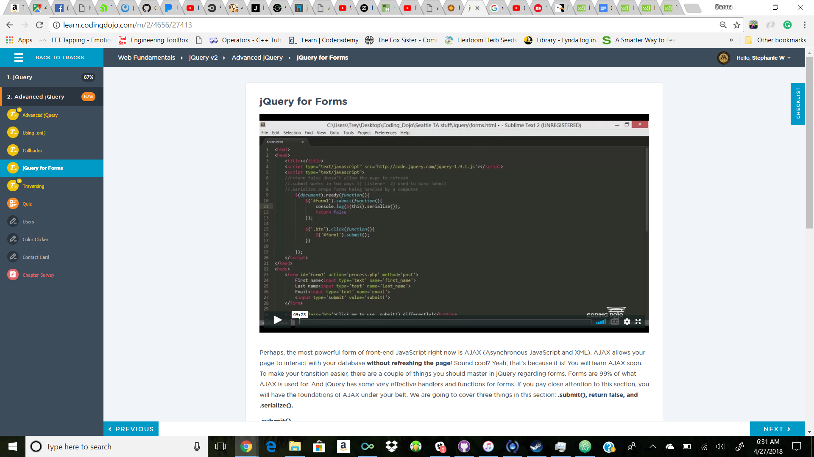
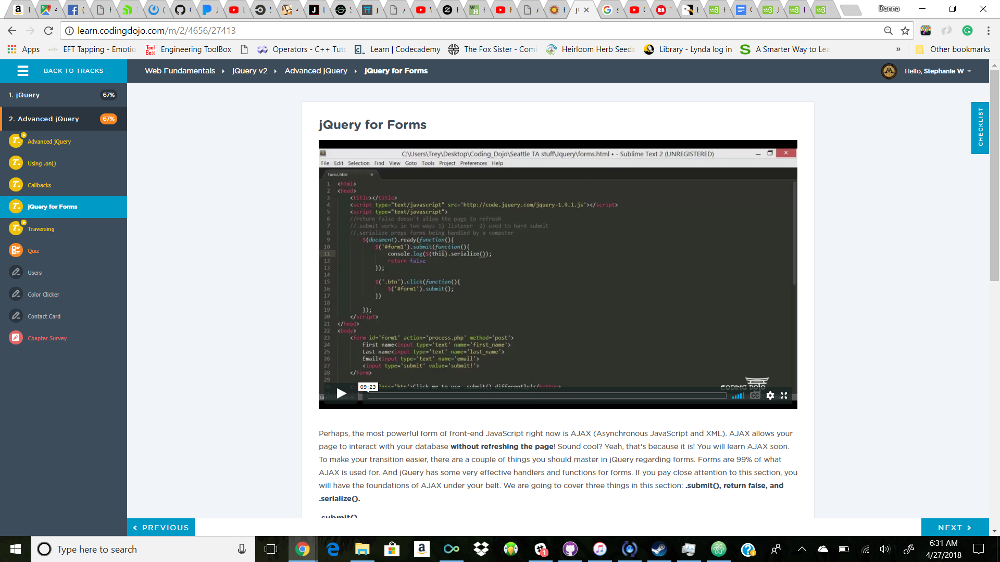

Integrating No-Mag Technologies with Magic!
Falcon Heavy Launches First Technological Wizarding Advancement Into Orbit.
In a historic display of magical advancement, no-majs and wizards alike looked to the sky on Feb. 6, watching in awe as the Falcon Heavy successfully navigated its way through the atmosphere and into orbit.
The rocket, build and developed by wizarding’s own Elon Musk, is a turbocharged version of the initial Falcon series, and marks the first time a device of this magnitude has been sent into space by a private company. The payload, playfully
disguised as a muggle vehicle, was none other than Mr. Musk’s Tesla broomstick. It is expected to orbit the sun for hundreds of millions of years.
“It’s kind of silly and fun, but silly and fun things are important,” Mr. Musk said.
Britain’s Golden Girl Faces Trial - and Still has Secrets?

If you didn’t know by now that Owana Potter - famed Auror, sister to the Chosen One, and all around forgettable witch - was recently scheduled to face trial for a crime then my dear reader, you’ve been living in a cave for the past few months.
If you have committed to a new life as a hermit allow me to fill you in.
Owana Potter has killed someone. That’s right readers, one of our so-called War Heroes has murdered someone. Looks like her personality isn’t as golden as her hair. The trial occurred just a few days ago in one of the deepest trials rooms
reserved for only the fiendish of crimes, and it was attended by yours truly. The murder apparently happened during one of Potter’s Auror missions. They were tracking down the same bloke who tried to off Ron Weasley with a cursed letter ages
ago. It was such a weak attempt, I’m surprised they didn’t just let that go. But it’s interesting that the idea that this man nearly killed Ron Weasley might have drove Ms Potter to murder - but more on that later.
I’ll spare you the grisly details but basically the man who nearly killed everyone’s favourite ginger was some ex-Death Eater nutter who recruited a Hogwarts drop-out to work on these dodgy weapons he was creating. One of them was
a orb? Sphere? Whatever, a thing that exploded on contact. Owana Potter shot a disarming charm at the thing in the Death Eater’s hand and - Boom. You can imagine. Because it was “accidental” and really, no one is going to be sobbing their
eyes out over one less mad man in the world, Ms Potter got off with only a two week probation and two hundred galleon fine. A far cry from the usual Azkaban sentence for murder. But the story doesn’t end here my lively readers. Since I was
fortunate enough to witness the trial, I also got to witness the - well - witnesses. And one of them was none other than Ron Weasley himself.
Tall and gangly and freakishly freckled as ever - although with a bit more muscle mass, I will admit - he stepped down to give his account on what happened that night. Blah blah blah, boring, boring he said the same thing all the
other witnesses said but Weasley goes a step further and mentions what happened back in the Ministry. Owana Potter allegedly ran off to the bathroom (To cry? To puke? To laugh maniacally? Who knows) and, in Weasley’s words, “I comforted her.”
He comforted her? Now what could that mean? Methinks Witch Weekly might have a new twosome to sink their teeth into - I mean, we’re all getting pretty bored with Celestina Warbeck and her latest fifty year old boyfriend, aren’t we? Are Weasley
and Potter meeting in Ministry bathrooms for secret tryst? If so, how can Ron Weasley live fact that he’s romancing a woman who has killed someone? Unless the fact that she might have killed the Death Eater in his name softened that gulp of
posion?
And how will Harry Potter react to all of this? This is his sister and best friend we’re talking about. He was at the trial, he heard everything. Could this ruin years of friendship? I suggest keeping a close eye on these two.
Crup: Magical Dog or Menace to Muggles?
Researcher’s in the Departments for the Care and Wellbeing of Magical Creatures have come up with a new way of removing magical animals from no-maj areas. While the average garden gnome is harmless and goes unnoticed by most adult no-majs, more than 500
Crup’s a year find their way into no-maj neighborhoods and are euthanized for their aggressive nature towards no-majs.
Crup’s, a magical breed of dog that originated in the Southwest of the United Kingdom, are often confused for the more common Jack
Russel Terrier. The defining feature of a Crup is its forked tail. Whether through malicious intent, negligence or irresponsible pet ownership, thousands of Crup, world wide find themselves separated from their magical owners and wandering
no-maj area. Rolf Scamander, grandson on the famous magizooligist Newt Scamander, and his research team have found and ingenious way of preventing Crups from ending up in no-maj animal shelters.
Russel Street Rescue poses as a animal rescue organization for Jack Russel Terriers with a extreme behavioral issues. Armed with well training Crups and locator spells they find or receive stray Crups and take them from no-maj areas
for rehabilitation. Russel Street Rescue states that due to the nature of the behavioral issues of their rescues, they will not rehome any dogs their receive. Each dog they receive will live our their lives on a ranch, trained by experienced
professionals. “There has been one happy, yet strange development since we began” Rolf Scamander offered when asked about the success of his project.
“We have received a number of actual Jack Russel Terriers with extreme behavioral issues and we’ve partnered up with an organization in Los Angeles that ships over Pit Bull breeds from high-kill shelters. Crups love them!” Despite
the oddity of the statement, when we went Scamander’s rehibilitation center we found that Crups tend to gravitate towards the handful of Pit Bulls on the premises, sometimes even following them in long trains. A number of the reclaimed Crup’s
have been rehomed to a few magical owners arounds the world after an intense vetting process, but Rolf insists that these are the exceptions to the rule.
“These Crups have gone through a very traumatizing time. Here, they can receive the love, care, and training they need to live long and healthy lives. We will not risk sending on of our dogs back to the streets.”